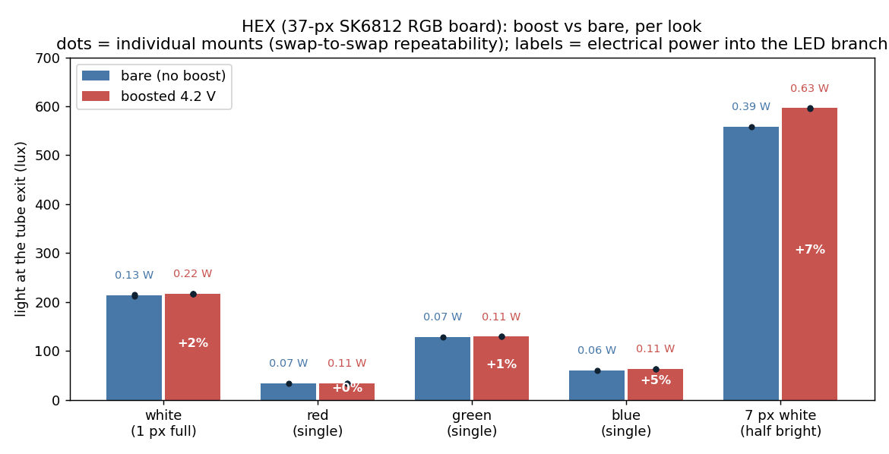
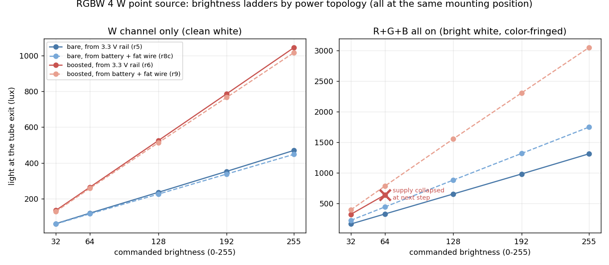
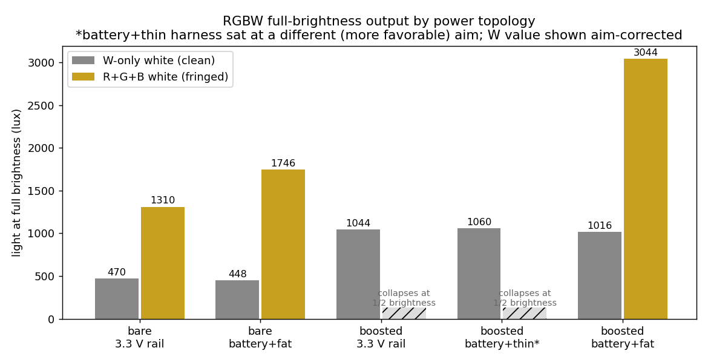
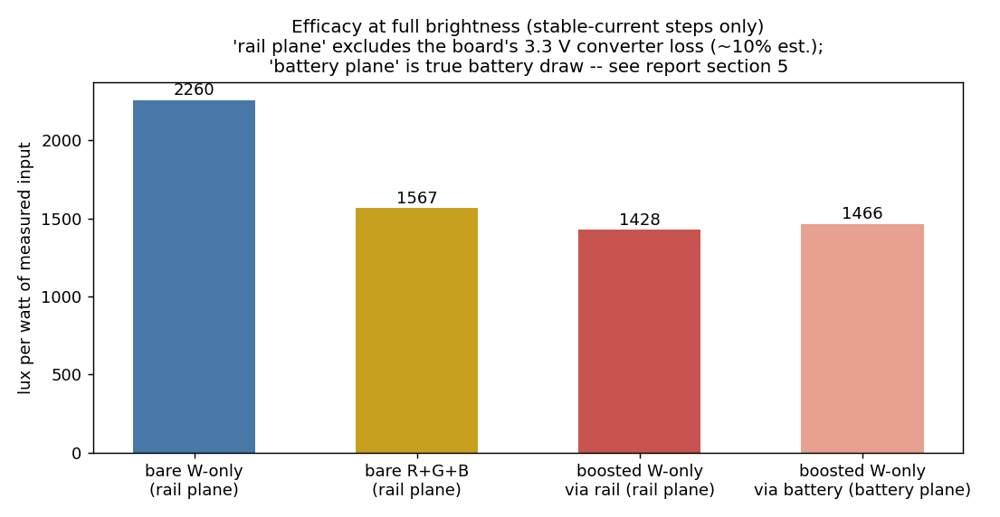
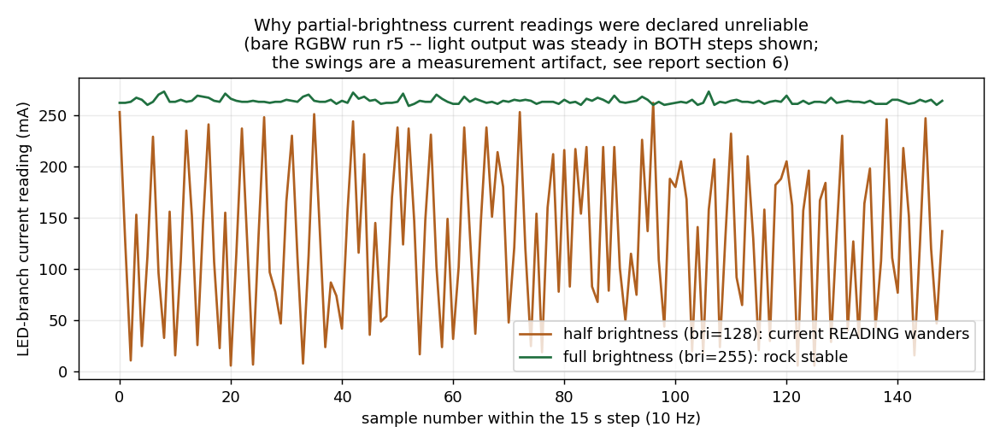

Does a 4.2 V boost converter earn its place in the lantern? Bench report: LED supply-voltage A/B campaign, 2026-07-02
Ben Eckart + Claude (pair bench session), Oakland desk rig.
52 logged runs across 32 data files (ops/bench/data/boost_ab/).
Figures regenerate via ops/bench/report_figs_boost_ab.py.
Written for readers who did not sit through the session: terms are spelled out,
and every claim carries an evidence grade (see "How to read this report").
TL;DR
For the 37-pixel HEX board in its gobo role (one white pixel): the boost is not
worth it. It adds 60% more electrical power for a light increase we could not
distinguish from zero (≤2%, inside measurement noise). Verified by four
back-and-forth hardware swaps.
For the 4 W RGBW point source, the boost genuinely works -- it roughly
2.3x's the clean white output (448→1016 lux) -- but it costs roughly a
quarter to a third of the light-per-watt, and the un-boosted module was already judged
bright enough by eye. Decision: ship without the boost; the option is fully
characterized if the field test at height ever demands more white.
The biggest practical discovery wasn't the boost at all: it's the wiring.
Feeding the RGBW straight from the battery over decent-gauge wire beat the board's
3.3 V regulated output by +33% on full white (1746 vs 1310 lux) -- for free.
Every "collapse" we chased all day traced to power delivery (a regulator limit,
damaged connectors, thin wires), never to the LEDs or the boost itself.
Two instrument gotchas were caught, diagnosed, and fenced off: a firmware gamma
setting that silently re-enables itself after a reboot (contaminated exactly 2 of 32
files, verified exhaustively), and current readings that are untrustworthy at partial
brightness (light readings stayed trustworthy throughout).
0. How to read this report
Every substantive claim is graded. The day itself demonstrated why this matters:
two confident mid-session explanations (a "loose sensor cable", a "+27% boost
improvement") were later overturned by our own data. Grades used:
Grade
Meaning
REPLICATED
Measured multiple times, across hardware swaps or independent runs, with agreement.
As close to fact as this bench gets.
MEASURED ONCE
A clean, direct measurement, but from a single run or mount. Could shift with
repetition.
STRONG EVIDENCE
Multiple independent observations point the same way, but at least one alternative
explanation is not fully excluded.
HYPOTHESIS
A plausible mechanism consistent with the data; could be disproven by a test we
have not run.
OPEN
Unknown; a defined test exists but has not been run.
Mini-glossary.Lux: light intensity as the human eye weighs it, measured here by a photopic
sensor at a fixed position -- absolute values are specific to this rig; ratios
are the portable result.
Boost converter: a small circuit that raises voltage (here a TPS63802 module
set to 4.2 V).
VBAT: the battery's own terminal, ~3.2-3.3 V for our LiFePO4 cells.
3.3 V rail: the PowerFeather's regulated output (a buck-boost converter fed
from the battery); it also powers the ESP32 processor.
Starvation / dropout: addressable LEDs contain per-color constant-current
drivers; if the supply voltage is too low for a color's forward voltage plus driver
headroom, that color runs below its regulated current and dims -- blue and white
suffer first, red last (this is the "goldening" seen in June).
Brightness (0-255): the commanded dimming level; light should scale linearly
with it.
1. The question
We can buy TPS63802 boost modules pre-jumpered to 4.2 V. 4.2 V is the sweet spot
because the LEDs' data-input threshold is 0.7 x supply: at 4.2 V a 3.3 V logic signal
still clears it (2.94 V threshold); at 5 V it would not (3.5 V threshold)
REPLICATED -- every boosted configuration ran
all day with direct 3.3 V data.
"Worth it" was defined three ways before testing:
(A) worth the per-fixture installation effort,
(B) a visually noticeable gain in brightness or color accuracy,
(C) better efficiency in light per watt.
2. The rig
Desk harness: an upside-down 3D-printed lantern prototype forms a cylindrical tube;
the LED under test sits beneath it, and a VEML7700 photopic light sensor is taped at
the tube exit ~6 inches away. LEDs are driven by a PowerFeather V2 running the
led_studio firmware (web UI at http://ledstudio.local/,
battery-only). Power was measured by two INA219-based wattmeters read by a KB2040
microcontroller streaming over USB; light and power land in one timestamped log.
Capture tools: boost_ab_log.py / boost_ab_suite.sh (HEX),
rgbw_boost_ramp.py (RGBW brightness ladders with automatic
supply-collapse aborts).
Repeatability of the rig itselfREPLICATED:
across careful hardware swaps, electrical readings reproduced to ~1 mA and the HEX
optical readings to 1-2%. The one caveat: the RGBW point source has (at least) two
quasi-stable seating positions roughly 27% apart in measured luxSTRONG EVIDENCE -- absolute lux numbers carry that
uncertainty across re-mountings; within-mount comparisons do not.
3. Part one: the HEX board (37-pixel RGB, close-range glow + gobo)
Product constraint that frames everything: more than one full-white pixel washes
out the gobo projection, so the production operating point is a single white pixel
(or color-separated single pixels carrying the same total load).

Figure 1. HEX light output, bare vs boosted, per look. Dots are
individual mounts from the bare/boosted/bare/boosted swap series; the red/green
single-color looks act as built-in null controls (physics predicts no gain there, and
none was seen -- which validates the harness). Power labels are watts into the LED
branch at the measurement plane described in section 5.
Findings:
Single white pixel: +60% electrical power, ≤2% more light (inside the
±2% seating noise), so light-per-watt is ~40% worse boosted.
REPLICATED (4 mounts, null controls).
The boost's gain grows with load: +5% on the blue single (highest forward
voltage, first to starve), +7% on 7 pixels at half brightness -- both above the noise
floor. REPLICATED. This is the dropout physics
announcing itself: the effect is real, the production look just doesn't operate where
it pays.
Why a single pixel doesn't benefit: at a healthy battery the LED supply sits
around 3.2 V and the pixel's internal current regulators are already at (or near)
full current; extra voltage headroom becomes heat inside the pixel's driver
transistors, not photons. STRONG EVIDENCE
(the current/power/light accounting closes; not instrumented inside the pixel).
June's "goldening" (warm, blue-starved white under heavy loads) is consistent
with this: the June discharge data shows the LED supply really did sit at ~2.97 V at
~290 mA show loads -- measured at the LED, both battery and LED nodes were recorded.
MEASURED ONCE (one recorded discharge).
HEX verdict: skip the boost. (A) not justified; (B) no visible difference
at the production look; (C) clearly worse. One caveat keeps a small door open: all
HEX tests ran at healthy charge. Because the LED feed is regulated, low state of
charge should change nothing until deep discharge
STRONG EVIDENCE, but a ten-minute spot check on a
run-down battery OPEN would close it.
4. Part two: the RGBW 4 W point source (long-throw crisp gobo)
A single high-power addressable LED with four separate emitters: red, green, blue,
and a phosphor white ("W"). Two white looks exist: W-only (clean, no color
fringing) and R+G+B all on (much brighter, but the three colored emitters sit
millimeters apart so their beams fringe at the edges of a projection).

Figure 2. Light vs commanded brightness for four power topologies,
all at the same mounting position. Left: the W (clean white) channel. Right: R+G+B.
All ladders are linear -- dimming behaves -- and the boost roughly doubles the W
channel everywhere. The X marks where the rail-fed boosted configuration collapsed
its supply.

Figure 3. The completed topology matrix at full brightness.
"Fat" = larger-gauge JST-XH wiring; "thin" = the original instrumented harness with
small jumper wires.
Findings, in the order they matter:
The W emitter is severely current-starved at ~3.3 V. Un-boosted it passes
roughly a quarter of its boosted current; the boost takes clean white from 448-470 to
1016-1060 lux (~2.3x). REPLICATED (four
un-boosted and three boosted measurements across mounts and both feed topologies,
agreeing within a few percent once the known aim outlier is corrected).
Feeding the LED straight from the battery beats the 3.3 V rail by +33% on
R+G+B white (1746 vs 1310 lux at the same seating) -- the rail droops under load,
the battery doesn't. W-only is unchanged (equally starved either way).
MEASURED ONCE, but anchored: the W channel matched
across the two runs, pinning the seating.
Every supply collapse was a delivery problem, not an architecture problem.
Rail-fed boosted R+G+B collapsed at half brightness three separate times
REPLICATED (the rail is roughly 1 A limited);
battery-fed boosted through the thin instrumented harness collapsed the same way
(~0.3 ohm of loop resistance, measured from load-dependent sag
MEASURED ONCE); battery-fed over proper wire ran
everything to full with ~100 mV of battery sag at an estimated 1.3-1.4 A
REPLICATED (bare and boosted runs).
Boosted + battery + proper wire delivers the module's full capability: 3044
lux of R+G+B white, 1.74x the un-boosted maximum -- and this landed inside the
prediction band written down before the run.
MEASURED ONCE.
The processor is immune to LED-side trouble when the LED feeds from the
battery: during an intentional LED-branch collapse the board's own supply current
never moved (a dead-constant 116-118 mA) and it kept serving its web interface.
STRONG EVIDENCE (one clean collapse event,
unambiguous). This retires an old worry that radio bursts plus LED load could brown
out the controller -- for this topology.
RGBW verdict: ship un-boosted, feed the LED from the battery, use decent wire.
The eye test judged un-boosted R+G+B white "plenty bright" (1746 lux at the bench).
The boost is shelved with a complete option file: if the field test at real projection
distance ever demands ~2.3x the clean white, the production shape is a battery-fed
single-conversion boost on the adapter board with a proper enable pin.
5. Efficiency (light per watt)
One accounting subtlety, learned mid-session: watts were measured at two different
places. "Rail plane" = into the LED branch after the board's 3.3 V converter (its
~10% loss not included); "battery plane" = true battery draw. Comparing across planes
without correcting is how one of the day's predictions initially looked wrong.

Figure 4. Light per watt at full brightness -- only from steps with
stable current readings (see section 6). The boost consistently trades efficiency for
output ceiling.
Boost efficiency cost on clean white: ~37% via the rail (double conversion), and
roughly 25-30% when fed from the battery (single conversion, ~11% battery-side
saving vs the rail-fed path at matched output).
MEASURED ONCE each, consistent with converter
physics.
W-only vs R+G+B white efficacy, un-boosted at full: ~2260 vs ~1570 lux/W (about
1.4x in W's favor). MEASURED ONCE.
Correction to a mid-session claim: an earlier "phosphor white is 3x more
efficient than RGB white" figure was computed from current readings later shown
unreliable; the defensible number is the 1.4x above, and the boosted R+G+B efficacy
was never cleanly measured (its only stable steps were behind the collapse).
ESP32 + radio overhead while driving the bench: 116-118 mA, measured cleanly as
the isolated board branch. MEASURED ONCE (but dead
flat across ten steps).
6. Measurement quality, gotchas, and what they taught us

Figure 5. Raw current samples within two 15-second steps of the
same un-boosted run. At full brightness the reading is rock stable; at half
brightness it swings across nearly the full range while the light output (measured
simultaneously) is steady.
Current readings at partial brightness are unreliable; light readings are good
everywhere. The swings appear in un-boosted runs too (so it is not the boost
module) and vanish at full brightness. REPLICATED.
The suspected mechanism -- the supply converter enters a bursty light-load mode and
the meter's 68 ms averaging window aliases against it --
HYPOTHESIS: consistent with everything observed,
never confirmed with an oscilloscope. All conclusions in this report rest on
full-brightness (stable) current readings or on light readings.
The damaged-connector saga. The boosted numbers shifted after a re-mount;
a first analysis credited the reseat with +27% more light. Replication then showed
the +27% was a seating/aim change and the electrical fix was worth ~6% of
input power. The physical root cause was found by hand: the RGBW's 3-pin JST
cable-to-cable pins are oversized for female dupont sockets -- forcing them in splays
the socket, which then grips a normal header pin poorly. Two damaged duponts were
recovered from the harness. STRONG EVIDENCE that
this was the r1-era fault (damage in hand + matching electrical signature; the exact
6% attribution rests on one before/after pair). Bench rule: never mate JST
cable-to-cable pins into female duponts.
The featured epistemics example -- the "flaky sensor cable"
that wasn't. A run came back optically blind and the first explanation, stated
too confidently, was a loosened sensor cable "fixed by reseating". Later analysis of
the monitor's own output showed the light sensor's I2C bus had almost certainly been
wedged: the wattmeter harness was unplugged mid-transaction, a classic way to
leave the shared data line held low, which made the still-connected light sensor
unreachable and slowed the monitor to a crawl. What actually fixed it was the
monitor rebooting during the reseat handling (its uptime counter proves the reboot).
STRONG EVIDENCE for the wedge; a marginal cable
contact is not 100% excluded. The end result was the same -- reseat, works again --
but the lesson is different: don't unplug I2C devices from a live, actively
polling bus, and the monitor firmware should add bus recovery (queued in TODO).
The gamma trap. The LED firmware's gamma-correction option silently
defaults to ON at boot; the board rebooted unnoticed during a rewiring session, and
the next runs produced a brightness curve bent by gamma (light proportional to
brightness^2.2 instead of linear). An exhaustive audit of all 32 data files confirmed
contamination is limited to exactly two files (both already quarantined as artifacts;
gamma is mathematically a no-op at full brightness, which is where all headline
numbers live). REPLICATED (file audit +
firmware source + a reboot fingerprint in the logged state). The capture tools now
pin gamma off. Bench rule: a board reboot silently resets the whole look state --
re-verify settings after any power interruption.
Render-on-change. The LED firmware only pushes pixel data when a value
actually changes, so a hot-swapped LED stays dark until the next change -- two runs
captured a dark LED before this was understood. The capture tools now force a
render by wiggling brightness by one count. REPLICATED
(and mechanism read directly from the firmware source).
The fuel gauge cannot see a battery-terminal LED feed. Tapping the VBAT
header bypasses the gauge's sense resistor: the gauge reported a constant ~120 mA
while the LED branch drew up to ~450 mA. REPLICATED
(many steps, two runs). Production consequence below.
7. Production implications
LED power comes from the battery, not the 3.3 V rail: +33% on bright white
for free, no ~1 A rail ceiling, and the processor is isolated from LED transients.
Design the tap downstream of the fuel gauge's sense resistor or state-of-charge
telemetry will miss the fixture's dominant load (trivial on a custom board; needs a
schematic check for the COTS PowerFeather path).
Conductor and connector quality is a first-class spec. Today it was worth
25-30% of top-end light across three different failure costumes (rail droop, damaged
duponts, thin-harness resistance). Production: proper crimped JST, short fat wires,
no hand-wired jumpers in the LED power path.
A battery-fed LED rail is always live. These LEDs latch their last frame,
so firmware must guarantee an all-off frame in every shutdown path, and a production
boost (if ever) needs its enable pin on a GPIO with a pull-down. Worth considering a
load switch for the LED feed regardless of the boost.
Emitter aim through collimating optics is very sensitive: ~27% lux swings
between quasi-stable seatings on this bench. The production optical assembly should
positively locate the LED module, not rely on adhesive placement.
Numbers now available for the bottom-up power budget (which replaced the
retired 120 mAh/night guess): full-brightness LED branch draws 0.21-0.84 W un-boosted
depending on look, plus ~0.38 W of always-on controller overhead at bench duty
(WiFi-heavy; production ESP-NOW duty will differ).
8. Open questions
Question
Status
Defined next step
Is the un-boosted clean white bright enough through a real gobo at tree
height? This is the actual decision input for ever reviving the boost.
OPEN
Night field test with real lantern optics at projection distance.
R+G+B "white" color quality: predicted warm/fringed (green and blue starved),
but chromaticity was never measured -- the lux sensor is color-blind by design.
HYPOTHESIS
Camera or colorimeter comparison, or a deliberate eye test at matched
brightness.
RGB emitters read 11% dimmer at identical current after one remount (W emitter
unchanged): aim shift or damage from the collapse events?
OPEN
Nudge/rotate the module and re-check: recovery = aim; no recovery = degradation
(then capture per-channel singles as the go-forward baseline -- none exist from
before).
One run (r4) showed a brightness-dependent +27% that fixed geometry
cannot explain; the surviving speculation is a thermal/mechanical tilt under drive.
HYPOTHESIS
Logged as an anomaly; would need a deliberately instrumented repeat.
Exact 3.3 V rail current ceiling (bracketed 0.5-1 A).
OPEN
Rail ramp with the INA monitor if the number ever matters; likely moot given the
battery-feed decision.
Low-state-of-charge spot check for the HEX verdict (expected to change
nothing, since the LED feed is regulated).
OPEN
Ten minutes with a run-down cell: re-run the white A/B.
Oscilloscope on the rail if anyone cares; the workaround (trust lux, trust
full-brightness current) is sufficient for now.
9. Data and reproduction
All raw data: ops/bench/data/boost_ab/*.jsonl (32 files, one per
labeled run; each row is a timestamped sensor sample or a snapshot of the LED
firmware's state, and each file ends with or contains machine-readable summaries).
Naming: date_time + config + look + run tag; files tagged r8/r8b
are the two known-contaminated artifacts and say so in the log. Capture and analysis
tools: ops/bench/boost_ab_log.py, boost_ab_suite.sh,
rgbw_boost_ramp.py, report_figs_boost_ab.py. The narrative
audit trail -- including the corrections this report summarizes -- is the sequence of
2026-07-02 entries in LOG.md.
Report written 2026-07-02 by Claude, reviewed against the raw data;
corrections during the session came from Ben's skepticism at least four times, which
is the review process working as intended.